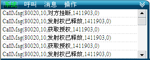
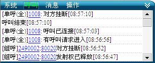
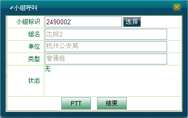
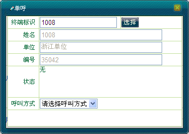
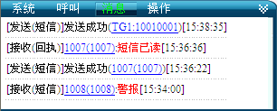
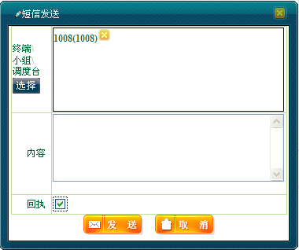
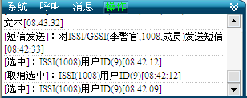
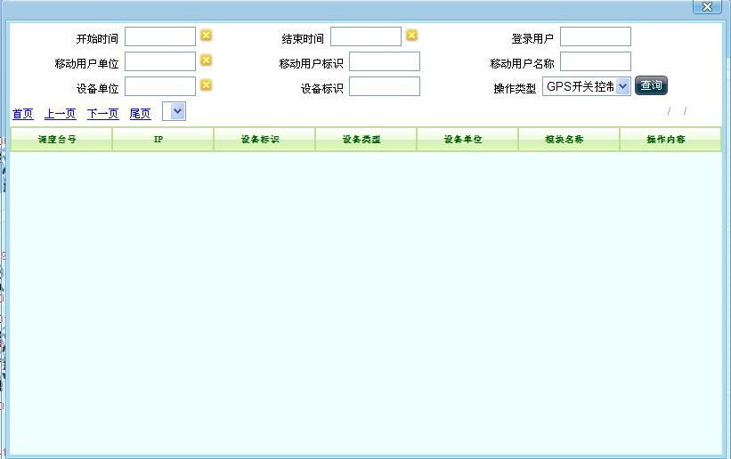
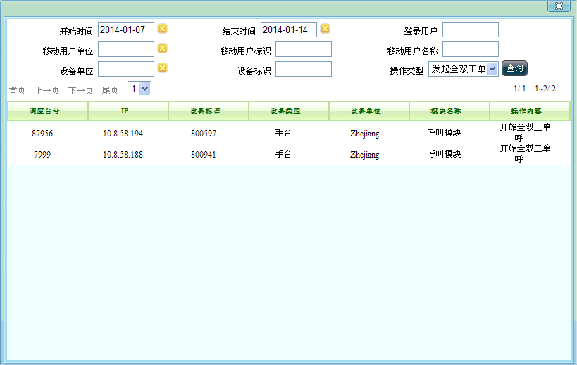

只有调度用户成功登陆GIS系统后，才有权限进行日志功能。
系统提供了日志查询的界面，可以根据日志开始、结束时间和操作类型等查询条件对日志进行一个系统的查询。除了总的日志查询，界面左下角还有实时的日志显示窗口。如下图所示：

图1. 实时日志窗口
实时日志窗口提供的日志功能包括：
系统日志：主要是系统对调度员登录注册eTRA GIS系统进行记录，以及系统对调度员的正常操作及错误操作等进行完整记录。
呼叫日志：主要记录系统中呼叫所产生的日志信息。
消息日志：主要记录了发送/接收普通短消息以及发送/接收状态消息的日志信息。
操作日志：主要记录了调度员在GIS系统上的一系列操作信息。
打开系统左下角系统日志窗口，默认系统日志，显示如图2所示。
图2. 系统日志
在呼叫日志中除了记录呼叫所产生的操作日志外，对于组，单击鼠标左键可对该组发起组呼，对于用户，单击鼠标左键可对其发起单呼。
打开系统左下角呼叫日志窗口，切换到“呼叫”标签，显示如图3所示。

图3. 呼叫日志
 组用户左键功能
组用户左键功能
例：对呼叫日志中的“2490002”组进行左右键操作，其操作步骤如下：
1）在呼叫日志中，找到“2490002”组，单击鼠标左键，或者右键选择“组呼”，弹出“小组呼叫”对话框，如下图4所示。

图4. 小组呼叫
2）按住＜PTT＞键发起组呼，单击＜结束＞键结束组呼，具体操作步骤可参见“小组呼叫”。
 对用户操作
对用户操作
例：对呼叫日志中的“1008”进行操作，其操作步骤如下：
1）在呼叫日志中，找到“1008”，单击鼠标左键，弹出“单呼”对话框，如图5所示。具体单呼操作步骤可参见“单呼”一章。

图5. 单呼对话框
在消息日志中，主要包含三个方面内容，一方面记录了发送/接收普通短消息的操作日志，另一方面记录了发送/接收状态消息的操作日志，除此两方面外，还包含部分的左右键的功能：
对于组，单击鼠标左键可对该组发起组短信的功能；
对于用户，单击鼠标左键可对其发起短信。
打开系统左下角消息日志窗口，切换到“消息”标签，显示如图7所示。

图6. 消息日志
 组用户左键功能
组用户左键功能
例：对消息日志中的“TG1（10010001）”组进行左键操作，其操作步骤如下：
1）在消息日志中，找到“TG1（10010001）”组，单击鼠标左键，弹出“短信发送”对话框，具体操作步骤可参见“组短信发送”。
 用户左右键功能
用户左右键功能
例：对消息日志中的“1008（1008）”进行左键操作，其操作步骤如下：
1）在消息日志中，在“1008（1008）”处单击鼠标左键，弹出“短信发送”对话框，如图7所示。具体操作步骤参见“个人短信发送”。

图7. 发送个人短信
打开系统左下角操作日志窗口，切换到“操作”标签，显示如图8所示。

图8. 操作日志
系统将记录用户的各个操作，配置用户可通过日志查询来获取系统所有的历史操作信息。
1）在系统操作菜单栏中单击［调度功能/操作日志］，弹出“日志查询”对话框。

图9 日志查询窗口
2）在“日志查询”对话框里按照查询的需要选择输入各项查询条件，其中日志的“开始时间”和“结束时间”是一定要输入的查询条件。然后在“操作类型”下拉框里选择一种操作类型，再点击“查询”按扭。对话框下方将列表显示符合查询条件的日志记录，如图10所示：

图10 日志查询结果窗口
 说明：
说明：
日志查询条件包括开始时间、结束时间、登录用户、移动用户单位，移动用户标识、移动用户名称、设备单位、设备标识以及操作类型。
“开始时间”和“结束时间”这两个为必须输入的查询条件。
“开始时间”、“结束时间”、“移动用户单位”和“设备单位”这四个查询条件，只要点击就会跳出对话框让用户选择。
“操作类型”这个查询条件，在下拉框里让用户选择。操作类型的种类由同级的配置用户进行配置，详见日志配置。
| 返回顶端 |
Copyright © 2012 Eastcom, Inc. All rights reserved. |
||